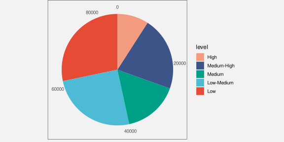
6 Colour
Figure 6.1 shows a pie chart of the number of offenders for different levels of crime seriousness (between 2011 and 2021). In this data visualisation, the crime level, which is a qualitative variable, is encoded as colour, which is appropriate for representing qualitative values (Section 3.4). It is easy to decode the crime levels because it is easy to identify the colour for a particular crime level amongst the set of colours used.
Figure 6.2 shows another pie chart of the same data, again encoding the qualitative level as colour. It is again easy to identify each crime level because we can easily identify each separate wedge colour. However, Figure 6.2 is more effective than Figure 6.1 because we can also perceive an ordering of the wedges from more serious crimes, which are darker wedges, to less serious crimes, which are lighter wedges.
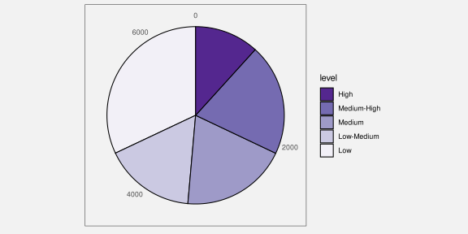
The fact that there can be two data visualisations, Figure 6.1 and Figure 6.2, with the same mapping—the qualitative level of crime is encoded as the colour of the wedges—but the two data visualisations have different effectiveness suggests that there is still more to learn about how different visual features work.
This chapter covers some more details about how the colour visual feature works.
6.1 Hue, chroma, and luminance
We have so far taken a very simplistic approach to colour, treating it as if it is a single qualitative visual feature (Section 3.4). However, the perception of colour can be divided into three separate visual features: hue, chroma, and luminance (Figure 6.3).1 Hue describes what we normally refer to as the colour name: reds, oranges, yellows, greens, blues, and purples. Chroma describes the colourfulness, from bright to dull, and luminance describes the lightness, from dark to light. Our visual system is capable to perceiving changes in hue and changes in chroma and changes in luminance.
We have described colour as a qualitative visual feature so far, but that really strictly only applies to hue. For example, in Figure 5.5, we encoded different ethnic groups as different hues. We are very good at decoding qualitative data values from different hues, subject to the capacity limits described in Section 3.6.
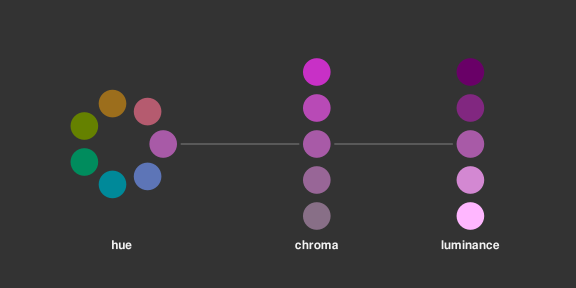
6.2 Ordinal visual features
Chroma and luminance are both nominal visual features in that they can be used to encode different categories, but they are also ordinal visual features because we can decode an ordering from a set of colours that differ in terms of either chroma or luminance or both. A set of colours that transitions from darker to lighter and/or brighter to duller conveys an ordering from larger to smaller.2
This helps to explain why Figure 6.2 is more effective than Figure 6.1. In Figure 6.2, the colours differ mostly in terms of luminance and chroma so we are able to perceive changes from larger values to smaller values because the colours transition from darker to lighter.
In this sense, chroma and luminance are able to convey more information than hue because they can represent nominal differences and ordinal differences, whereas hue can only represent nominal differences.3
On the other hand, Figure 6.4 shows that chroma and luminance are even more limited than hue in terms of capacity. We can only use chroma and/or luminance to represent nominal data when there are very few different groups to represent.
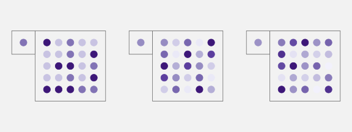
If we encode data values to the colour of data symbols, and the colours only differ in terms of hue, then we can only decode nominal information from the data symbols; do the data symbols represent different groups or the same group.
If we encode data values to the colour of data symbols, and the colours differ in terms of chroma and/or luminance, it is also possible to decode ordinal information form the data symbols.
6.3 Perception is relative
We saw in Section 5.4 that perception of lengths is relative. For example, smaller differences in length are easier to see when the lengths themselves are short (Figure 5.9).
There is a similar rule for the perception of colours. Our perception of luminance and chroma is affected by neighbouring colours.4 This effect is demonstrated in Figure 6.5: the same colour when surrounded by a darker background appears lighter than it does when surrounded by a lighter background.
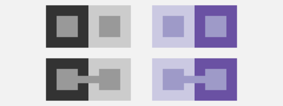
This effect also applies to the perception of hue. Figure 6.6 shows a pie chart of the number of offenders in each police district, with police district mapped to the colour of the wedges. There are two issues with the perception of the wedge colours: each wedge is affected by its neighbour so that, for example, some of the blue wedges look more green at the boundary with their more blue neighbour and more blue at the boundary with their more green neighbour; furthermore, the colours in the legend are perceived differently from the corresponding colours in the wedges because the legend colours are surrounded by a light grey, rather than sharing a boundary with a neighbouring colour.
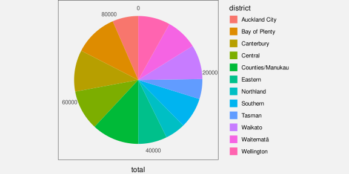
The pie chart in Figure 6.6 is not an effective data visualisation because it encodes qualitative data values with many different groups as colour hue. This exceeds the capacity of the hue visual feature; it is difficult to clearly identify which wedge corresponds to which district (Section 3.6).
Although it does not make the use of hue any more appropriate, for the purposes of demonstration, we can solve the colour perception problems in Figure 6.6 by adding a white border to all of the wedges (see Figure 6.7). Now all of the wedges and all of the squares in the legend are perceived relative to a surrounding white border. This means that, not only is each wedge perceived as a solid block of constant colour, but it is easier to match the colours within the wedges with the colours in the legend.
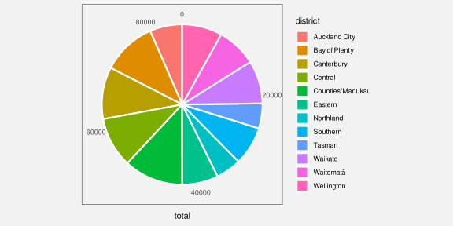
If we encode data values as the colour of data symbols, we may have difficulty decoding the colours if the same colour is presented with different colours adjacent to it.
6.4 Size matters
The perception of colours is also affected by the size of the coloured region. In particular, small regions of colour may blend together with neighbouring colours.5 For example, on the left of Figure 6.8, the yellow and blue stripes are, in reality, the same colours both in the top set of wide bars and in the bottom set of narrow bars, but the blue bars appear greener in the bottom set. The right side of Figure 6.8 shows that the same colours may appear different when they are used as fill colours for larger regions, like bars, compared to when they are used for thin lines. In this case, the blue line appears darker than the blue bars.
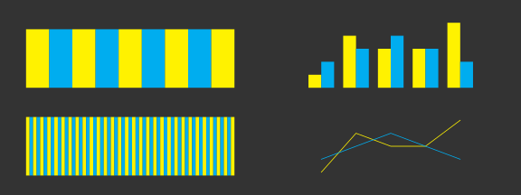
If we encode data values as the colour of data symbols, we may have difficulty decoding the colours if there are large differences in the sizes of data symbols.
6.5 Colours in space
Figure 6.9 shows two-dimensional slices of the set of visible colours arranged in three dimensions.6 The centre three coloured regions (surrounded by white circles) show slices of constant luminance. Chroma increases from the centre (indicated by a white dot) and hue changes with angle. We can see the familiar rainbow of colours from red, through orange, yellow, green, blue, indigo, and violet, back around to red. The top slice is for high luminance (light) colours and the bottom slice is for low luminance (dark) colours. The coloured regions to the left and to the right (surrounded by semicircles) show slices of constant hue. Luminance increases from bottom to top and chroma increases away from the flat side of the semicircle.
Figure 6.9 provides insight into what sorts of colours and what sorts of differences between colours are possible. For example, we can see that it is not possible to produce colours that have a high chroma and are very dark. In other words, there is no such thing as a very colourful black. This is also true for colours that are very light.
We can also see that the range of possible chroma values depends on both the hue and the luminance of colours. For example, it is possible to produce a light yellow with either a low chroma or a high chroma, but we can only produce a dark yellow with a low chroma. Equivalently, the range of possible luminance values depends on both the hue and the chroma of colours. For example, we can produce both dark and light low-chroma yellows, but we can only produce light high-chroma yellows.
This means that, if we want to encode data values as the chroma of a data symbol, we can get a higher decoding capacity through careful selection of hue and luminance. For example, we can generate a wider range of light greens than dark greens and a wider range of reds that are neither too light nor too dark.
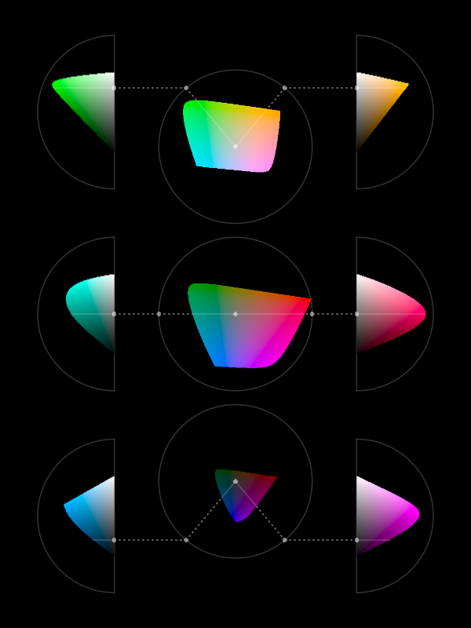
Figure 6.10 is similar to Figure 6.9 except that, instead of showing the range of colours that it is possible to perceive, it shows the range of colours that it is possible to produce using standard technology.7 The simple message here is that the limits on the range of colours that we can use to encode data values is much smaller than the range of possible colours. On the positive side, the range of colours that we can produce is still very large.
A more important message is that the general points about differences between colours still apply. For example, the range of possible chroma values is dependent on the hue and luminance of colours.
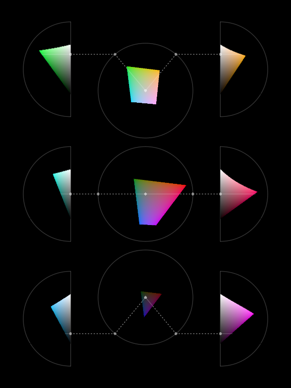
If we encode data values as the colour of data symbols, the choice of hue, luminance, and chroma affects the capacity of decoding—how many different colours can be effectively decoded.
6.6 Colour harmony
We have seen that hue is an appropriate visual feature for encoding qualitative data values because we can decode differences between hues without any ordering between hues. For example, blue is not larger than red.
However, it is not entirely true that there is no sense of distance between different hues. The left image in Figure 6.11 shows a colour wheel of hues for a constant luminance and chroma. Hues that are close together on this colour wheel are decoded as more similar than hues that are on opposite sides of the wheel. For example, the top two circles on the right of Figure 6.11 have hues that are from the left side of the colour wheel so they appear similar, but the bottom two circles have hues from the left and the right side of the colour wheel so they have a greater contrast.8
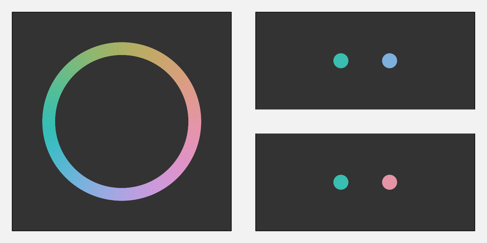
6.7 Colour vision deficiency
Roughly 10% of the population, primarily men, suffer from a form of colour vision deficiency (CVD). In the most common case, the viewer will have difficulty distinguishing between red and green hues.9 Figure 6.12 simulates how the colours in Figure 6.1 would appear to a person with severe CVD.
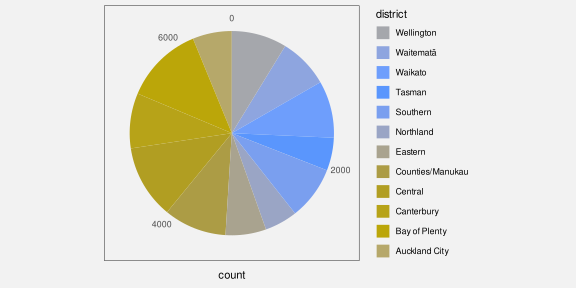
In order to avoid confusion for viewers with CVD, it may be necessary to vary luminance and/or chroma in addition to or instead of hue. For example, Figure 6.13 shows how the shades of purple in Figure 6.2 would appear to a viewer with severe deuteranopia. The difference in hue is of no importance in this case.
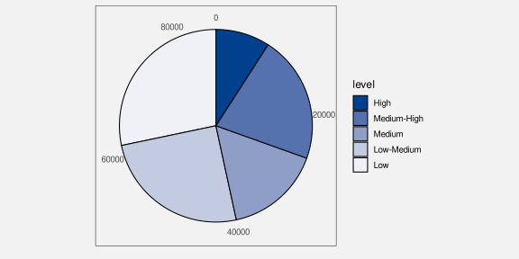
When we encode data values as the colour of data symbols, some viewers will have difficulty decoding the colours if we do not take into account common forms of colour vision deficiency.
6.8 Non-linear mappings
The top row of Figure 6.14 shows a linear luminance mapping; we have a set of rectangles that change luminance in equal steps. The two rectangles on the left of this row appear very similar, while the two rectangles on the right of this row appear quite different. The darker rectangles appear to change more slowly and the lighter rectangles appear to change more rapidly. In other words, the decoding of luminance is not linear.
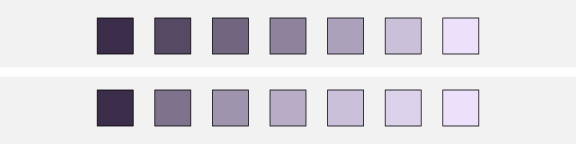
We saw in Section 4.7 that accurate decoding of data values from position relies on using a linear encoding. That was because the decoding of position is linear. A linear encoding from data values to position, followed by a linear decoding from position to data values, leads to an accurate mapping. And that is particularly important for mapping quantitative data values.
Part of the reason why it is not appropriate to map quantitative data values to luminance is that the decoding of luminance is not linear. This makes it difficult to accurately decode quantitative data values from the luminance of a data symbol.
However, we can use luminance to map ordinal data values (Section 6.2). In this case, all that we need is to be able to identify that a data symbol is lighter or darker than another data symbol.
The bottom row of Figure 6.14 shows a luminance mapping that takes larger steps for darker colours and smaller steps for lighter colours. In this row, the purples appear to change more evenly. We can see differences between the darker rectangles as well as between the lighter rectangles.
In other words, a non-linear mapping from data values to luminance can be used to generate a larger set of luminance levels that can be differentiated from each other. A non-linear luminance mapping leads to increased capacity for decoding data values from luminance.
When we are mapping nominal or ordinal data values, and we are encoding to a visual feature that has a non-linear decoding, a non-linear encoding can be effective for increasing the capacity of the visual feature.
6.9 Escape capacity
We have previously identified that colour has a limited capacity (Section 3.6 and Section 6.2). In general, we cannot use colour to encode more than around 7 different categories. Section 6.5 also demonstrated that this capacity varies for different combinations of hue, chroma, and luminance.
One way to increase the decoding capacity of a colour encoding is to vary more than one of hue, chroma, and luminance at once. For example, the top row of Figure 6.15 shows a set of colours that only vary in terms of luminance—hue and chroma are held constant (this is the bottom row from Figure 6.14). In the second row of Figure 6.15, in addition to increasing luminance, we have increasing chroma, so there are larger differences between colours, but still a clear ordering. Similarly, in the bottom row of Figure 6.14, the hue changes slightly as the luminance increases so that the differences are more obvious.
In effect, this is another example of a non-linear encoding. We take a non-linear path through colour space (Section 6.5).
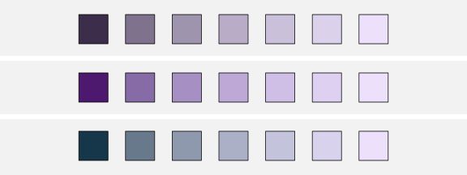
Another way to expand the decoding capacity of a colour encoding is to reduce the number of colours that need to be directly compared. For example, if data symbols are arranged in a very regular pattern, like in a bar plot, comparisons between neighbouring data symbols are most important. This means that we can order the colours to maximise neighbour differences rather than maximising all pairwise differences.10 Figure 6.16 demonstrates this idea with a bar plot of the crime rate in different districts for both 2011 and 2021. This bar plot uses the same set of hues as Figure 6.7, just in a different order so that adjacent bars have very different colours. It is very easy to distringuish between adjacent colours.
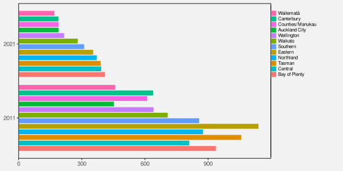
A similar idea is to just reuse a smaller set of hues, which means larger differences between adjacent colours, but repeat the set. The regular arrangement of the data symbols means that we can still differentiate between repeated colours because of the bar positions (Figure 6.17). For example, we can differentiate the pink for the Wellington district from the pink for the Eastern district because Wellington is at the end and Eastern is in the middle.
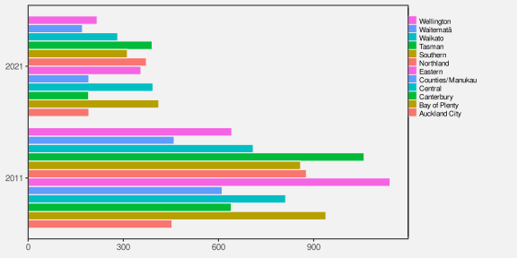
6.10 Colour palettes
When we encode nominal or ordinal data values as colours, we have to choose a set of colours, or a colour palette. For example, in Figure 6.1 we have to choose a different colour to represent each level of crime.
This choice is difficult because there are many different colours to choose from and often there is no obvious mapping from a data value to a particular colour. For example, what specific hue, chroma, and luminance should we choose to represent a “high” crime level? As we have seen in the preceding sections, there are also many, sometimes competing, criteria involved in selecting effective colours.
As an example, we can consider the problem of selecting a set of 5 different hues to represent 5 different categorical data values, like the palette that is required to represent the difference levels of crime in Figure 6.1.
We know that it is effective to encode qualitative data values as the hue of a data symbol (Section 3.4 and Section 6.1). In order to make the individual hues easy to identify, we can place them evenly around the colour circle. If we do not want the viewer to decode any ordering of the data values from the data symbols, then we should also hold the chroma and luminance of the data symbols constant. The top row of Figure 6.18 shows a palette that follows that simple approach.
The bottom row of Figure 6.18 shows one big problem with this attempt: the hues are very hard to identify for viewers with CVD (Section 6.7).
Figure 6.19 shows another big problem with the palette in the top row of Figure 6.18. An attempt to hold chroma constant for a range of hues will fail on most standard computer displays because they cannot produce high chroma for all hues (Section 6.5).
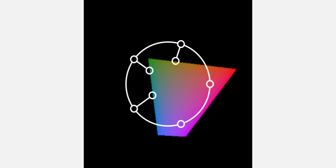
Given the difficulty of selecting an effective colour palette, there is a good argument for making use of pre-existing colour palettes that have been designed by experts. For example, the ColorBrewer web site provides tools for choosing colour palettes for nominal and ordinal encodings. The Okabe-Ito palette for encoding nominal data (up to 9 categories), is specifically designed to allow effective decoding by all types of CVD (Figure 6.20). 11
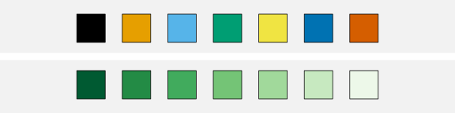
6.11 Case study: Diverging colour palettes
We have data on the total number of points that were scored and conceded in World Cup matches for Tier One nations (the top 10 rugby-playing nations) at each World Cup. Table 6.1 shows a sample of these data. This an aggregated version of the data set that we saw in Table 4.1.
| team | year | scored | conceded | diff |
|---|---|---|---|---|
| Italy | 1987 | 22 | 95 | -73 |
| Italy | 1991 | 27 | 67 | -40 |
| Italy | 1995 | 51 | 52 | -1 |
| Italy | 1999 | 10 | 168 | -158 |
| Italy | 2003 | 22 | 97 | -75 |
| Italy | 2007 | 30 | 94 | -64 |
Figure 6.21 shows a heatmap of the points differential (points scored for minus points scored against) for Tier One nations at each Rugby World Cup. The data symbols are rectangles, the teams are encoded as the vertical positions of the rectangles, and the years are encoded as the horizontal positions of the rectangles. These are both effective mappings and we can easily decode to teams or years. The points differentials are encoded as the colour of the rectangles, but in a slightly complicated way. Positive data values map to a shade of green, while negative values map to a shade of brown. In both cases, we have a constant hue, with increasing chroma and decreasing luminance as the data values get further away from zero.12
The use of two hues creates two different groups (positive and negative values), while the changes in chroma and luminance convey changes in absolute magnitude (if only for ordinal comparisons).13
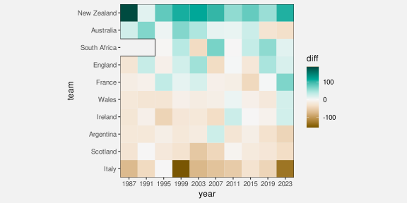
A diverging colour palette is effective because it creates two distinct visual features: a nominal hue to differentiate between two groups and changes in chroma and/or luminance to encode ordinal values within each group.
6.12 Case study: The rainbow
In some fields of research, for example medical imaging and geographic imaging, a common problem is to visualise numeric data values on a regular spatial grid. Figure 6.22 shows an example, where the grid is a set of longitudes and latitudes in the vicinity of New Zealand and the data values are measures of wind strength.
A common solution is to encode the numeric data values using colour14 and it is also common to use a rainbow colour palette for that encoding (the image on the right of Figure 6.22). However, there are several problems with this approach.15
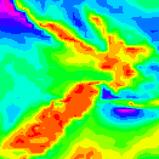
Figure 6.23 shows the spectrum of colours for rainbow palettes.16 This shows that a rainbow palette is mostly different in terms of hue and we have already established that hue is not a good visual feature for encoding quantitative data values (Section 3.4 and Section 6.1).
At the same time, The middle row of Figure 6.23 shows that the rainbow palette also varies in terms of luminance. We know that luminance can be an effective encoding for ordinal data values (Section 6.2), but the luminance changes in a rainbow palette are not monotonic. There are regions of almost constant luminance plus regions where luminance decreases followed by regions where luminance increases.17 This makes a rainbow palette a poor encoding even for showing the order of numeric data values.
Finally, the changes in luminance and chroma within the rainbow spectrum produce bands of colours (red, yellow, green, cyan, blue, magenta). In other words, the spectrum appears discrete rather than continuous. This can result in a decoding that adds structure (discrete levels) to numeric data values that are in reality continuous.18 For example, Figure 6.22 suggests three main regions–red-yellow, green-cyan, and blue-magenta—but the underlying data values vary more smoothly than that.

6.13 Case study: Viridis
One of the arguments for using a rainbow colour palette is that viewers like that it is colourful. We also saw in Section 6.9 that varying hue in addition to luminance can help to increase the capacity of an ordinal colour scale.[^multi-hue]
vary in hue as well as luminance and/or chroma (multi-hue palettes) lead
to faster and more accurate decoding than palettes with a constant
hue (single-hue palettes). @rainbow-not-all-bad makes a similar argument.The viridis colour palette, shown in Figure 6.24 (on the right), is an attempt to fix the problems of the rainbow palette, while still retaining a significant range of hues. Compared to Figure 6.22, it is much easier to decode regions of stronger winds and regions of weaker winds from the darker and lighter regions of Figure 6.24.
At the same time, the image on the left of Figure 6.24 shows a colour palette that only varies in terms of luminance and we can see that it is easier to see some details in the more colourful viridis map, such as the variations in low wind strength (the yellows) over New Zealand.
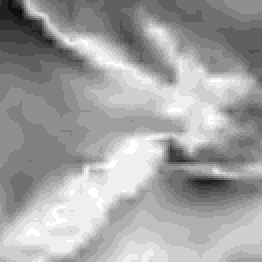
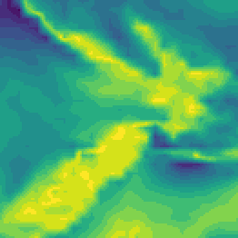
Figure 6.25 shows the spectrum for viridis colour palettes.19 We can see that there is still a large range of hues, but the change in luminance is now monotonic, which at least allows decoding of ordinal data values. In addition, the range of hues has been selected to be appropriate for viewers with red-green colour blindness (Section 6.7).20

6.14 Summary
Colour is really three visual features: hue, chroma, and luminance.
Hue is excellent for encoding nominal data values, though it has a limited capacity.
Chroma and luminance can be used to encode ordinal data values, but they have even lower capacity.
However, there are several complications:
The decoding of data values from hue, chroma, and luminance is affected by surrounding colours and the size of the data symbol.
Approximately 10% of viewers are unable to differentiate between red and green hues with similar chroma and luminance.
The range of possible chroma values that can be decoded depends on both hue and luminance.
The range of possible luminance values that can be decoded depends on both hue and chroma.
The range of possible colours that can be produced is constrained by the technological limits of standard computer monitors.
Selecting which colours should be used to encode data values is difficult to get right and a good solution often involves varying all of hue, chroma, and luminance at once.
Consequently, it is usually a good idea to make use of pre-existing colour palettes that have been carefully designed to avoid most problems.
Bartolomeo, Sara Di, Raphael Buchmüller, Alexander Frings, Johannes Fuchs, and Daniel Keim. 2025. “Reflections on the Uses and Available Choices of Categorical Colorschemes.” INSTICC; SciTePress. https://doi.org/10.5220/0013109400003912.
Borland, David, and Russell M. Taylor Ii. 2007. “Rainbow Color Map (Still) Considered Harmful.” IEEE Computer Graphics and Applications 27 (2): 14–17. https://doi.org/10.1109/MCG.2007.323435.
Cleveland, William S, and Robert McGill. 1984. “Graphical Perception: Theory, Experimentation, and Application to the Development of Graphical Methods.” Journal of the American Statistical Association 79 (387): 531–54.
Gołębiowska, Izabela, and Arzu Çöltekin. 2022. “What’s Wrong with the Rainbow? An Interdisciplinary Review of Empirical Evidence for and Against the Rainbow Color Scheme in Visualizations.” ISPRS Journal of Photogrammetry and Remote Sensing 194: 195–208. https://doi.org/https://doi.org/10.1016/j.isprsjprs.2022.10.002.
Harrower, Mark, and Cynthia A. Brewer. 2003. “ColorBrewer.org: An Online Tool for Selecting Colour Schemes for Maps.” The Cartographic Journal 40 (1): 27–37. https://doi.org/10.1179/000870403235002042.
Heer, Jeffrey, and Maureen Stone. 2012. “Color Naming Models for Color Selection, Image Editing and Palette Design.” In Proceedings of the SIGCHI Conference on Human Factors in Computing Systems, 1007–16. CHI ’12. New York, NY, USA: Association for Computing Machinery. https://doi.org/10.1145/2207676.2208547.
Ichihara, Yasuyo G., Masataka Okabe, Koichi Iga, Yosuke Tanaka, Kohei Musha, and Kei Ito. 2008. “Color universal design: the selection of four easily distinguishable colors for all color vision types.” In Color Imaging XIII: Processing, Hardcopy, and Applications, edited by Reiner Eschbach, Gabriel G. Marcu, and Shoji Tominaga, 6807:68070O. International Society for Optics; Photonics; SPIE. https://doi.org/10.1117/12.765420.
Munzner, Tamara. 2014. Visualization Analysis and Design. CRC Press.
Nuñez, Christopher R. AND Renslow, Jamie R. AND Anderton. 2018. “Optimizing Colormaps with Consideration for Color Vision Deficiency to Enable Accurate Interpretation of Scientific Data.” PLOS ONE 13 (7): 1–14. https://doi.org/10.1371/journal.pone.0199239.
Okabe, Masataka, and Kei Ito. 2008. “Color Universal Design (CUD): How to Make Figures and Presentations That Are Friendly to Colorblind People.” https://jfly.uni-koeln.de/color/.
Schloss, Karen B. et al. 2023. “More of What? Dissociating Effects of Conceptual and Numeric Mappings on Interpreting Colormap Data Visualizations.” Cognitive Research: Principles and Implications 8 (38). https://doi.org/10.1186/s41235-023-00482-1.
Schloss, Karen B., Zachary Leggon, and Laurent Lessard. 2021. “Semantic Discriminability for Visual Communication.” IEEE Transactions on Visualization and Computer Graphics 27 (2): 1022–31. https://doi.org/10.1109/TVCG.2020.3030434.
Smith, Nathaniel, and Stéfan van der Walt. 2015. “A Better Default Colormap for Matplotlib.” YouTube video. https://www.youtube.com/watch?v=xAoljeRJ3lU.
Stone, Maureen. 2012. “In Color Perception, Size Matters.” IEEE Comput. Graph. Appl. 32 (2): 8–13. https://doi.org/10.1109/MCG.2012.37.
Ware, Colin. 2021. Information Visualization: Perception for Design. 4th ed. Morgan Kaufmann.
Zeileis, Achim, and Paul Murrell. 2023. “Coloring in r’s Blind Spot.” The R Journal 15: 240–56. https://doi.org/10.32614/RJ-2023-071.
The three-dimensional experience of colour arises from the fact that there are three different sorts of cones in the retina (see Section 2.1), each sensitive to a different range of light wavelengths: The L cones respond to long wavelengths (reds); the M cones respond to medium wavelengths (greens); and the S cones respond to short wavelengths (blues). The neural connections that combine the messages from the retina are also divided into three pathways: light-dark, which represents the sum of L, M, and S cones; red-green, which represents the difference between L and M cones; and blue-yellow, which represents the difference between S cones and the sum of L and M cones. For a more detailed description, see Ware (2021).↩︎
Schloss, Leggon, and Lessard (2021) and Schloss et al. (2023) are examples of studies that have demonstrated a dark-is-more bias.↩︎
The stance taken in this book, that chroma and luminance are only appropriate for qualitative (including ordinal) data, is more rigid than in many other places. Chroma and luminance are often included as an appropriate choice for encoding quantitative data values as well, albeit a poor one. For example, Cleveland and McGill (1984) includes chroma (as saturation) and Munzner (2014) includes both luminance and chroma (as saturation) in their rankings of the accuracy of different visual features.↩︎
This relative perception of colours is useful for being able to adapt to a wide range of lighting conditions. See Ware (2021) for a more detailed discussion.↩︎
Stone (2012) describes “spreading”, which means a blending or averaging of colours over small areas by the visual system: “In designing colors for digital visualization systems, one of the most critical factors is the interaction between size and color appearance.”↩︎
Figure 6.9 shows the extent of the optimal colour solid, which is essentially the colours that it is possible to produce by reflecting a light source off a surface that has perfect reflectance. This colour solid was determined assuming specific illumination conditions (D65), and assuming a standard human observer.
The colours are shown in CIE \(L^*u^*v^*\) space (aka HCL space), which is (roughly) perceptually uniform so that perceptual differences between pairs of colours that are the same distance apart within the space are perceived as having the same visual difference.
The colours shown are produced using sRGB specifications, so many of the colours, especially at high chroma, are not realistic.↩︎
Figure 6.10 shows the gamut of sRGB colours in CIE \(L^*u^*v^*\) space (aka HCL space).↩︎
In colour theory, hues that are close together on a colour wheel are referred to as analogous and hues that are opposite each other are complementary.↩︎
This is more commonly known as red-green colour blindness. Blue-yellow colour blindness is also possible, but much rarer. There are also four distinct categories of red-green colour blindness, though the effect on the colour perceived is similar in all cases. The images used in this book simulate deuteranomaly (the most common form of CVD). The approximate figure of 10% is from Ware (2021).↩︎
This idea is described and demonstrated in Bartolomeo et al. (2025).↩︎
The ColorBrewer tools are described in Harrower and Brewer (2003).
Okabe and Ito established the Color Universal Design organization, but the associated web site is no longer available. Okabe and Ito (2008) provides a general discussion of colour-blindness, including the palette used in Figure 6.20. An earlier piece of work that produced a palette of just 4 colours is described in Ichihara et al. (2008).
Zeileis and Murrell (2023) provides an overview of a large number of different palettes, within the context of producing data visualisations in R.↩︎
This colour palette is based on the BrBG diverging palette from ColorBrewer.↩︎
In contrast to a diverging colour palette, a colour palette for nominal data is often called a qualitative palette and a palette for ordinal or qualitative data is called a sequential palette.↩︎
The resulting image is often referred to as a pseudo-colour image.↩︎
The problems with rainbow palettes have been well-known for decades and attempts have been made to stamp out the use of rainbow colour palettes, but they remain popular in some fields of research (Borland and Taylor Ii 2007; Gołębiowska and Çöltekin 2022).↩︎
The rainbow palette is typically a fully-saturated, maximum-value spectrum of hues—the most colourful and brightest colours that a typical computer monitor can produce.
Saturation and value are essentially less accurate versions of chroma and luminance. For example, a fully-saturated, maximum-value yellow has a higher chroma and luminance than a fully-saturated, maximum-value blue.
The rainbow spectrum is basically a path along the boundary of the colours in Figure 6.10, visiting the most extreme points for different hues. This path clearly is not going to have a simple monotonic change in either luminance or chroma.↩︎
A rainbow palette is a colour encoding that is non-linear in an unhelpful way (Section 6.8).
The representation of luminance in Figure 6.23 also shows an example of a 3d illusion (Section 2.10). The curved line combined with the gradients of grey tempt us to see a curved wall of constant height that is receding from us.↩︎
Heer and Stone (2012) discuss that viewers tend to group colours by discrete colour names and that those colour groups help to explain how colour palettes are decoded.↩︎
There is no official publication that explains the development of the viridis colour spectrum, but there is a video on YouTube that is very good (Smith and Walt 2015).↩︎
Nuñez (2018) take things a step further with a cividis colour palette that provides a CVD-safe version of viridis that also has a wider and linear variation in luminance (in Figure 6.25, we can see that the changes in luminance are non-linear and do not span the full range of luminance).↩︎